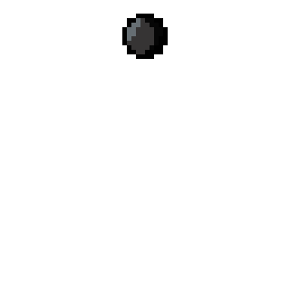
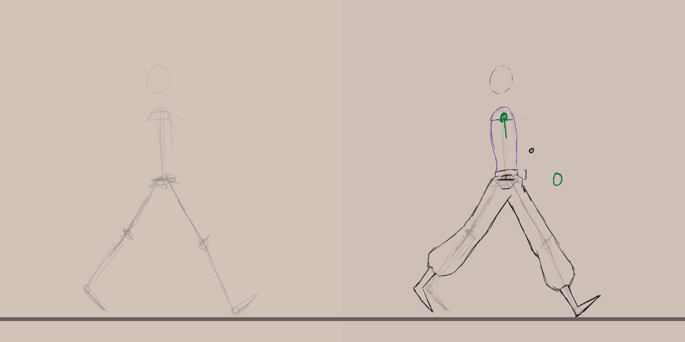
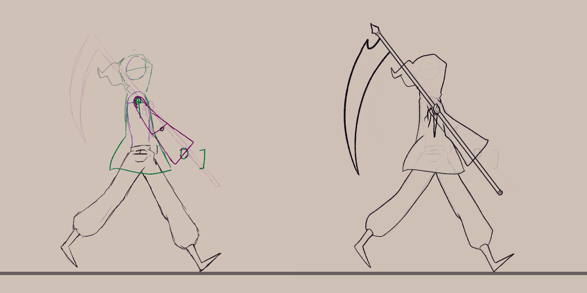
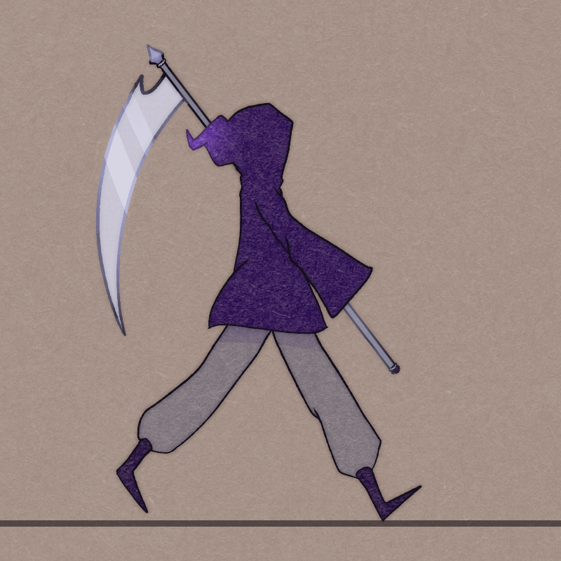
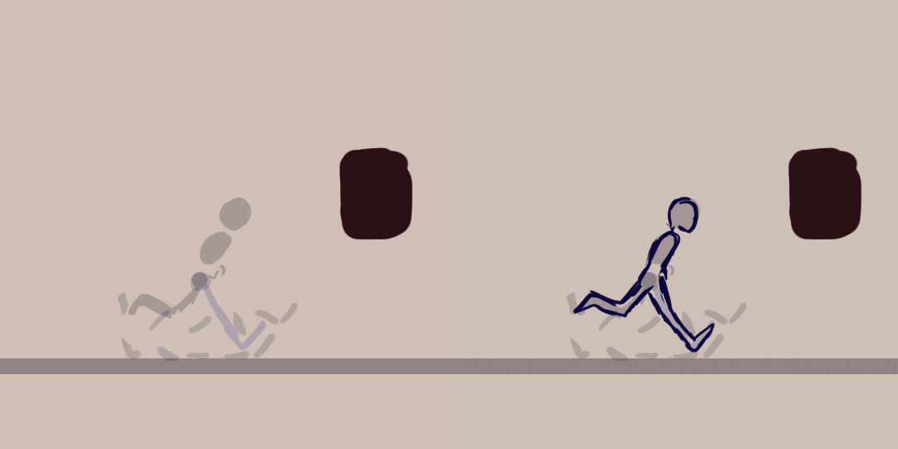
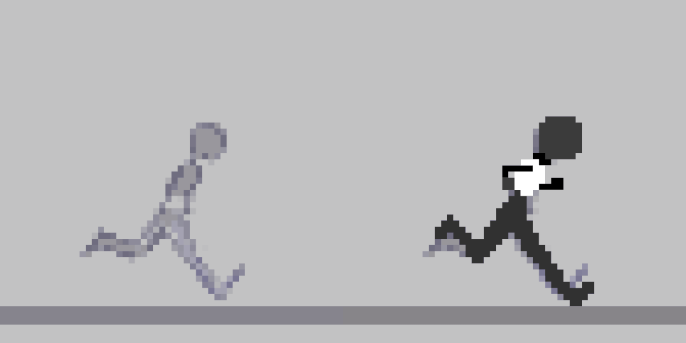
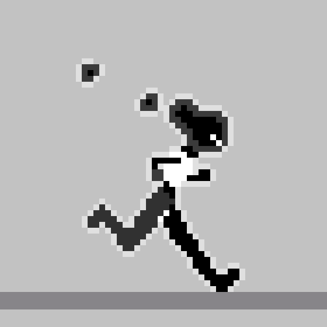

209 - Animation
Navigation
Key Concepts
(I) - Writing a short definition of the 5 types of animation.
Traditional Animation/Cel Animation
Also known as cel animation, traditional animation is one of the oldest types of animation; it originally involved hand drawing frames on paper before transferring them to clear sheets of plastic called 'cels' to be coloured and made into the final product. In the modern day, however, it's also possible to use the same methods using computers and software instead of paper and cels, and this has become the standard for most cel animation in the industry.
2D/Vector Based Animation
2D animation, also known as vector-based animation, is substantially more accessible than types such as traditional or stop-motion. This style involves using animation software to create rigs for characters or objects, then move parts of that character around using them. Rigs are also often still used in combination with hand drawn frames and /assets, but with vector-based animation, it's not a necessity. A key difference between digital cel animation and 2D animation is the use of vectors- allowing for easy resizing and transformation of elements without causing blur, something that isn't possible with the raster graphics usually present in cel animation.
3D Computer Animation
3D animation, or computer animation, involves the use of digital 3D models as opposed to drawings or 2D /assets. Rigs are created for these models, then different parts of the model are altered and repositioned to make up the different frames of an animation; this can be done via manually moving the model for each keyframe, or using motion-capture technology and refining the movements afterwards. The versatility and relative accessibility of 3D animation makes it a go-to option for creative projects on a budget, or large-scale efforts like VR, or 3D video games, where other options may be too time-consuming, technically difficult, or expensive.
Motion Graphics
Motion graphics are notably different from the other animation types, in that the others are more like mediums, and are most often used to help illustrate or create narrative media; motion graphics instead are defined as making use of animation to move graphic design elements such as text, logos, or objects. In fact, any other type of animation can be used to create motion graphics; it's not a medium or a method, but more like a genre in which the primary focus is on animated graphic design rather than characters. Motion graphics are most often found in places such as website development, advertisements, and film credits.
Stop Motion
Stop motion animation is a form of animation that uses physical objects, incrementally moving them and capturing photographs of each stage, to create the appearance of movement when played in quick succession. Any object can be used in stop motion, or even live actors, but some popular methods are the use of plasticine figures, puppets, or dolls as they can better be used for more complex designs and movements. A lot of planning is involved in this animation type compared to others, as it's harder to go back and fix past frames individually, and in big scenes with a lot of moving parts, multiple people would have to work on different parts of a scene. Early stop motion even used film, which gave animators no way to check previous frames, though with modern technology this is now possible.
(II) - Selecting 3 of the 12 Principles of Animation to describe and explain.
Squash and Stretch
Squash and stretch is a technique in which an animator intentionally distorts the shape of an object, via compressing or extending some or all of said object, in order to to achieve a sense of weight, speed or flexibility in an animation. It is an essential part of creating natural and expressive movement. As an example, when animating a person jumping, a good use of squash and stretch would exaggerate the movement by 'squashing' the character horizontally during the build up to and recovery from the jump. This would make for a more 'bouncy' feeling in the jump, as opposed to stiff and robotic movement. Squash and stretch itself can fall somewhat into the principle of exaggeration, since most uses of it couldn't happen in real life, but it's applied anyway in order to avoid the stiffness that can come with life-accurate movement, and provide clarity to actions, movement and emotions.
Straight Ahead/Pose to Pose Action
There are generally two different ways to draw an animation - these are straight ahead action and pose to pose. The former refers to animating frame by frame, one step at a time in a mainly chronological manner. Pose to pose instead refers to animating using different key frames, then going back and drawing in-betweens. It's common to use both in tandem when animating, since each has their own benefits and downfalls and the preferable option for all the different parts of an animation is rarely just one. Straight ahead animation is best used to achieve fluid and natural movement, being especially useful for fast-paced scenes such as moments of action or frantic movement; though there is more risk of losing track of consistency like proportions and timing, so isn't as popularly used in longer or more complicated scenes. Forgoing doing everything chronologically, pose to pose benefits from it's use of planning out scenes beforehand to be a lot more consistent and easier to fix movement afterwards, seeing plenty of use in complex and drawn out scenes where composition really matters. However, it's not often desirable for those loose and spontaneous actions.
Slow In/Slow Out
Slow in and slow out as a principle of animation is the tuning of acceleration and deceleration of movement. Most natural movements are never completely linear; they often start slowly, pick up movement midway, then slow to a stop at the end. By replicating this in animation, something that can be achieved through using more frames for the start and stop of a motion and fewer for the middle, an animator can quickly make their movements more realistic and pleasing to the eye. This principle is particularly helpful to remember when creating impactful movements that the viewer can easily track with their eyes, as the slow in aspect can serve as its own kind of anticipation - and using slow in slow out in tandem with anticipation is what prevents motions from being so sudden the viewer can't process it. Additionally, exaggerating your use of this principle can create stylised and striking motions as opposed to keeping a wholly predictable, flat speed, helping keep visual interest.
Creating Animations
(I) - Making an animation of a bouncing ball using one of the 5 types of animation and employing the ‘Squash and Stretch’ principle.

b o i o i o i n g
(II) - Using the knowledge acquired from the ball bounce and reference footage to create a walk cycle.
Process
- Basic Movement
- Structure + Forms

- Final Sketches
- Cleanup & Linework

Finished Product
+Colour and textures 
(III) - Using the knowledge acquired from the walk cycle along with reference footage to create a run cycle.
Process
- Basic Movement
- Structure + Forms

- Scale to target resolution
- Final shapes and colours

Finished Product
+Details and shading 
Review
Tutor Feedback
Bouncing Ball
Maria has done a good job utilising the squash and stretch principle here, and has also taken time to add colour and shading in greyscale, which adds a subtle hint of depth to the ball as an object.
Walking Animation
Maria has gone above and beyond with the walking animation. The frame number looks high, the quality is superb and the finish on the scythe and the overlay of a fabric-like texture really blends the whole thing together nicely. The character looks unique and the walk has style - very impressive.
Running Animation
The style has gone back to pixel-art and the impression of a character running has definitely been achieved - the anticipation of each step is there, and the added feature of smoke plumes coming off the character's head is a nice touch.
Only suggested improvement might be a less prevalent outline on the character as it is quite thick relative to the body, however this could easily just be a stylistic choice.
Self Evaluation
When approaching this task in the future, I think that I would try to refine the final products and my techniques further. For example, while I was able to make use of keyframes, references, arcs, layer folders, and blending modes to an extent, I wasn't fully familiar with them all yet. Given the chance to do it again, I would aim to further capitalise on those techniques, and make the process efficient enough that instead of focusing on learning the basics, I could better spend that time on more advanced ideas like dynamics, composition/staging, stylization, adding appropriate detail, etc.